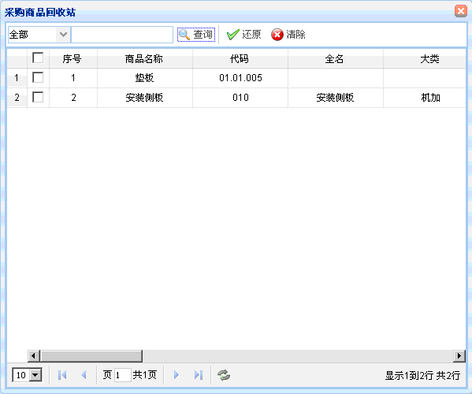
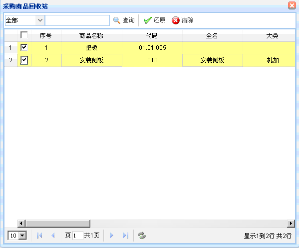

回收站
回收站
概述：如果不小心删除了重要的数据就在该模块的回收站中进行查找。
功能介绍：点击【回收站】后，出现如下图所示内容。有查询、还原、清除的功能。

图表2-1【回收站】
图表2-1【回收站】
【查询】 通过设置查询条件就可以查到你要找回的数据。
【还原】 在列表中选择你要找回的数据，点击还原，就可还原该数据。如下图所示：

图表2-2 【还原】
图表2-2 【还原】
【清除】 如果需要清除回收站中的数据，选择数据后，点击清除就可以清除该数据。
 常见问题
常见问题
1、？
2、？
3、？